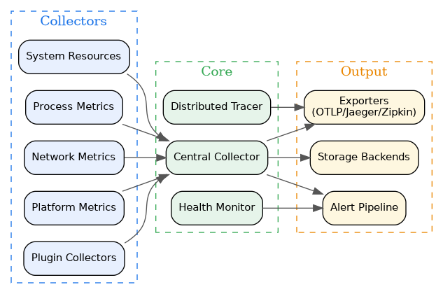

- Generated by
 1.12.0
1.12.0
|
Monitoring System 0.1.0
System resource monitoring with pluggable collectors and alerting
|
Monitoring System is a modern C++20 observability platform that provides system resource monitoring with pluggable collectors and alerting. It offers metrics collection, distributed tracing, health monitoring, alerting pipelines, and reliability patterns such as circuit breakers and error boundaries.
Built on an interface-driven design with runtime dependency injection, Monitoring System enables clean separation between observability concerns and application logic. As a Tier 3 component in the kcenon ecosystem, it builds on common_system and thread_system foundations.
| Category | Feature | Description |
|---|---|---|
| Collectors | 16+ Metric Collectors | System, process, network, battery, GPU, platform, custom, and plugin-based collectors |
| Tracing | Distributed Tracing | W3C-style trace context propagation with span hierarchy and export |
| Alerting | Alert Pipeline | Configurable triggers, threshold evaluation, and notification routing |
| Export | OTLP Export | OpenTelemetry Protocol export to Jaeger, Zipkin, and OTLP backends |
| Plugins | Plugin System | Dynamic collector loading with plugin API, registry, and hot-reload |
| Health | Health Monitoring | Dependency graph, composite health checks, and degradation detection |
| Reliability | Circuit Breaker | Resilience patterns with CLOSED / OPEN / HALF_OPEN states |
| Reliability | Error Boundary | Fault isolation with graceful degradation |
| Storage | Time-Series Storage | Memory, file, and time-series storage backends |
| DI | Dependency Injection | Runtime DI container with singleton, transient, and scoped lifetimes |
| Platform | Cross-Platform | Linux, macOS, and Windows via Strategy pattern providers |
| Optimization | Lock-Free Queue | High-throughput metric ingestion with lock-free data structures |
| Optimization | SIMD Aggregation | AVX2 (x86_64) and NEON (ARM64) accelerated metric aggregation |
| Optimization | Memory Pool | Object pooling with RAII return for reduced allocation overhead |
| Context | Context Propagation | Thread-local context propagation with less than 50ns overhead |
| Concepts | C++20 Concepts | MetricSourceLike, MetricCollectorLike, Validatable type constraints |
The system follows a pipeline architecture where collectors feed metrics into a central collector, which routes data to exporters, alerting, and storage.

A minimal example that sets up CPU and memory monitoring:
| Module | Directory | Key Headers | Description |
|---|---|---|---|
| Core | core/ | performance_monitor.h, central_collector.h | Central monitoring engine and metric aggregation |
| Interfaces | interfaces/ | metric_collector.h, metric_source.h, observable.h | Pure virtual interfaces for metrics and observation |
| Collectors | collectors/ | system_resource_collector.h, network_metrics_collector.h | 16+ built-in metric collectors for system resources |
| Factory | factory/ | metric_factory.h, builtin_collectors.h | Singleton factory with registry-based collector creation |
| Tracing | tracing/ | distributed_tracer.h, trace_context.h | W3C-style distributed tracing with span hierarchy |
| Context | context/ | context_propagation.h | Thread-local context propagation (less than 50ns) |
| Alert | alert/ | alert_pipeline.h, alert_triggers.h, alert_manager.h | Alert types, triggers, pipeline, and notification routing |
| Health | health/ | health_monitor.h, dependency_graph.h | Health monitoring with dependency graph and composite checks |
| Reliability | reliability/ | circuit_breaker.h, error_boundary.h, retry_policy.h | Circuit breaker, error boundary, and retry patterns |
| Exporters | exporters/ | otlp_exporter.h, jaeger_exporter.h | OTLP, Jaeger, and Zipkin trace/metric exporters |
| Plugins | plugins/ | plugin_loader.h, collector_plugin.h | Dynamic plugin loading and collector registration |
| Storage | storage/ | time_series_storage.h, storage_backend.h | Memory, file, and time-series storage backends |
| Optimization | optimization/ | lock_free_queue.h, memory_pool.h, simd_aggregator.h | Lock-free queues, memory pools, and SIMD aggregation |
| Platform | platform/ | metrics_provider.h | Linux, macOS, and Windows platform-specific metrics |
| Concepts | concepts/ | metric_concepts.h | C++20 concepts: MetricSourceLike, MetricCollectorLike |
| Example | Source | Description |
|---|---|---|
| Monitor Factory Pattern | monitor_factory_pattern_example.cpp | Registry-based collector creation and lifecycle |
| Distributed Tracing | distributed_tracing_example.cpp | W3C-style trace context propagation across services |
| Alert Pipeline | alert_pipeline_example.cpp | Configurable alert triggers and notification routing |
| OTLP Export | otlp_export_example.cpp | OpenTelemetry Protocol metric and trace export |
| Time-Series Storage | time_series_storage_example.cpp | Time-series metric storage and retrieval |
| System Collectors | system_collectors_example.cpp | Built-in system resource collection |
| Platform Metrics | platform_metrics_example.cpp | Cross-platform hardware and OS metrics |
| Health Reliability | health_reliability_example.cpp | Health monitoring with circuit breakers |
| Plugin Collector | plugin_collector_example.cpp | Dynamic collector loading via plugin system |
| Collector Factory | collector_factory_example.cpp | Factory-based collector instantiation |
| Storage Backend | storage_example.cpp | Storage backend configuration and usage |
| Alert Triggers | alert_triggers_example.cpp | Alert trigger definitions and threshold evaluation |
| Alert Notifiers | alert_notifiers_example.cpp | Alert notification channels and routing |
| Graceful Degradation | graceful_degradation_example.cpp | Graceful degradation under failure conditions |
| Multi-Service Tracing | multi_service_tracing_example.cpp | Distributed tracing across multiple services |
| Event Bus | event_bus_example.cpp | Metric event publishing and subscription |
| Basic Monitoring | basic_monitoring_example.cpp | Minimal monitoring setup and metric collection |
| Production Monitoring | production_monitoring_example.cpp | Production-ready monitoring configuration |
New to monitoring_system? Start here:
Monitoring System is a Tier 3 observability layer in the kcenon ecosystem, built on foundational and infrastructure layers:
| System | Tier | Relationship | Repository |
|---|---|---|---|
| common_system | 0 | Required – IMonitor, ILogger, Result<T>, Event Bus | https://github.com/kcenon/common_system |
| thread_system | 1 | Required – Thread pool, async operations | https://github.com/kcenon/thread_system |
| logger_system | 2 | Optional – Logging via runtime DI | https://github.com/kcenon/logger_system |
| network_system | 4 | Optional – HTTP transport for exporters | https://github.com/kcenon/network_system |